COVER
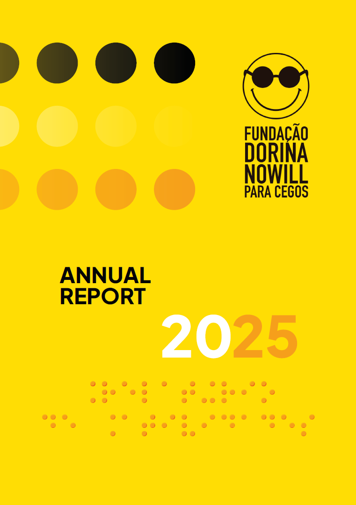
BACK COVER
![Image: Back cover. At the bottom left, the logo of the Dorina Nowill Foundation for the Blind. On the right, the following information: Dorina Nowill Foundation for the Blind. Unit One. Rua Doutor Diogo de Faria, 558. Vila Clementino – São Paulo. Unit Two. Rua Estado de Israel, 289. Vila Clementino – São Paulo. Illustration of a telephone. Plus 55 11 50 87 09 99; 11 55 54 09 99. Illustration of a globe with a cursor next to it. Fundacao dorina dot org dot b r. Below: Illustration. A circle with four icons along its edge, clockwise: an @ symbol, the silhouette of a person’s torso, the play symbol consisting of a horizontal triangle, and the silhouette of a person’s torso. In the center, the globe with curved horizontal and vertical lines. FOLLOW THE DORINA FOUNDATION ON SOCIAL MEDIA. Instagram logo, consisting of the front of a camera. Fundacao dorina nowill; Facebook logo, consisting of the lowercase letter f. Fundacao dorina. LinkedIn logo consisting of the letter i and a lowercase n. Fundacao dorina. YouTube logo consisting of the play symbol inside a black rectangle. Fundacao dorina. Illustration. Silhouette of a person with open arms inside a circle. Scan the QR code to access the ACCESSIBLE VERSION. QR code. The background is yellow, and at the top there are three rows of black, yellow, and orange circles. End of image.](../resources/images/image_Image23467.png)
Page 1
Page without content.
Page 2
Contents

Page 05 – Institutional Overview
Page 15 – Inclusion Support Services
Page 27 – Accessibility Solutions
Page 3
Page 33 – Administrative Areas
Page 57 – Financial Indicators
Page 69 – Governance and Management

SUBTITLE: Photo: Peterson Mateus, served by Fundação Dorina. END OF SUBTITLE.
Page 4

SUBTITLE: Photo: Dorina Nowill, founder. END OF SUBTITLE.
Page 5
1. Institutional Overview
Page 6
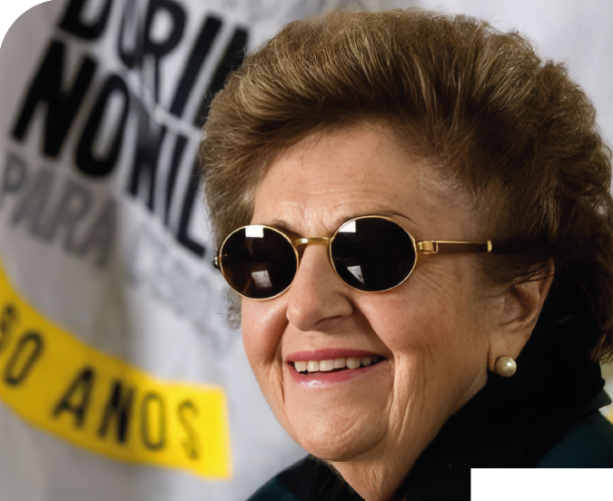
SUBTITLE: Photo: Dorina Nowill, founder. END OF SUBTITLE.
Introduction
Quote:
All I want is to start over until the last day of my life.
(Dorina de Gouvêa Nowill)
End of quote.
Throughout its history, Fundação Dorina Nowill para Cegos has built a reputation for excellence in service delivery and a steadfast commitment to the inclusion of visually impaired people. In 2025, this commitment was also reflected in the expansion of the Foundation’s physical facilities, an important milestone that supports the continued growth of its activities and provides even better conditions for serving clients and their families.
Page 7
Investing in new facilities and modernizing infrastructure are part of the Foundation’s ongoing commitment to maintaining excellence in its work. More than a physical expansion, these improvements reflect its responsibility to preserve the quality of its services and ensure that the institution is prepared to meet the needs of an ever-growing number of clients without losing the individualized care that has always defined its work.
With nearly eight decades of history, the Foundation continues to share knowledge, build partnerships, and expand its reach across different regions of Brazil. At the same time, it remains true to the values that have guided its mission from the very beginning: providing support, fostering independence, and creating opportunities for people with visual impairments to participate fully in society.
The following pages present the Foundation’s main initiatives, achievements, and milestones in 2025. More than a record of its activities, this report is also an opportunity to recognize and thank everyone who contributes to the Foundation’s continued growth with quality, responsibility, and purpose.
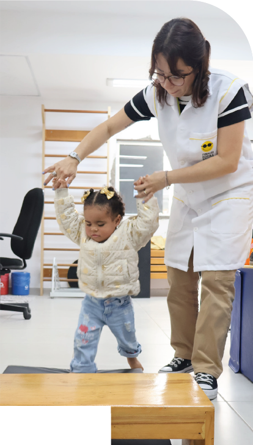
SUBTITLE: Photo: Alice Santos receiving physical therapy services. END OF SUBTITLE.
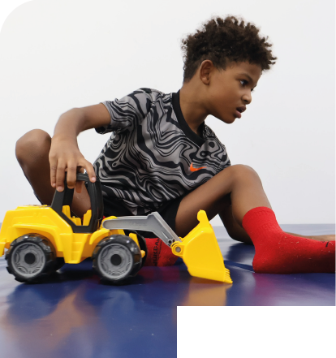
SUBTITLE: Photo: Guilherme Lourenço, served by Fundação Dorina. END OF SUBTITLE.
Page 8
Organizational Profile
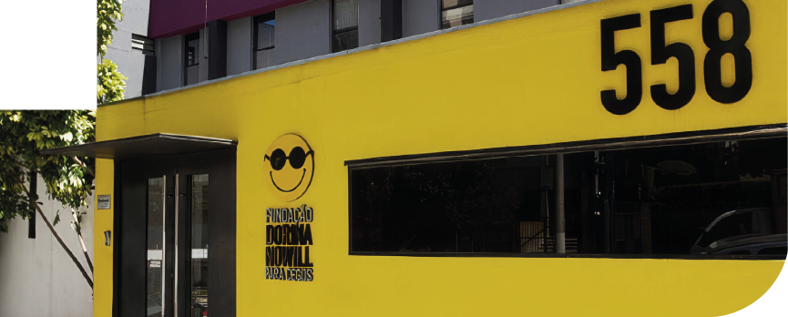
SUBTITLE: Photo: Fundação Dorina headquarters. END OF SUBTITLE.
Fundação Dorina Nowill para Cegos works to promote the autonomy and independence of visually impaired people, while also raising awareness of the importance of inclusion, accessibility, and every person’s right to participate fully in social, cultural, and professional life.
The Foundation was established through the initiative of Dorina Nowill, an educator who lost her sight at a young age and chose to transform her personal experience into a lifelong mission. After facing barriers to continuing her education and accessing reading materials, Dorina launched a movement to expand the production of braille books in Brazil. This effort led to the creation of the Foundation for the Book for the Blind in Brazil (Fundação para o Livro do Cego no Brasil) in 1946, with the goal of ensuring that people with visual impairments had access to information and education. The production of accessible books, which marked the beginning of this journey, remains one of the cornerstones of the Foundation’s work.
Over time, the Foundation expanded its scope of work by developing new areas of activity, always focused on promoting autonomy, access to knowledge, and social inclusion. The organization modernized its operations, developed technologies and solutions in the publishing, printing, and audiovisual fields, and established specialized services for habilitation, rehabilitation, and family support, evolving alongside changes in society and the needs of the people it serves.
Today, recognized in Brazil and internationally for the quality of its work, Fundação Dorina Nowill para Cegos continues to expand its projects and partnerships while remaining true to the commitment that inspired its creation: to help ensure that an increasing number of people with visual impairments have access to opportunities, independence, and full participation in every sphere of society.
Page 9
Purpose, Values, and Vision
Our PURPOSE
To promote inclusion and accessibility for visually impaired people, working together to transform lives and society.
Our VALUES
Ethics are non-negotiable.
Transparency in everything we do and how we do it.
Respect is at the heart of all our relationships.
Diversity is a fact; inclusion is our choice.
Perseverance in everything we do—we never give up.
Commitment to our purpose.
Innovation to build the future while honoring our legacy.
Our VISION
To be recognized worldwide as leading organization in inclusive empowerment, expanding, innovating, and multiplying high-impact initiatives for present and future generations.
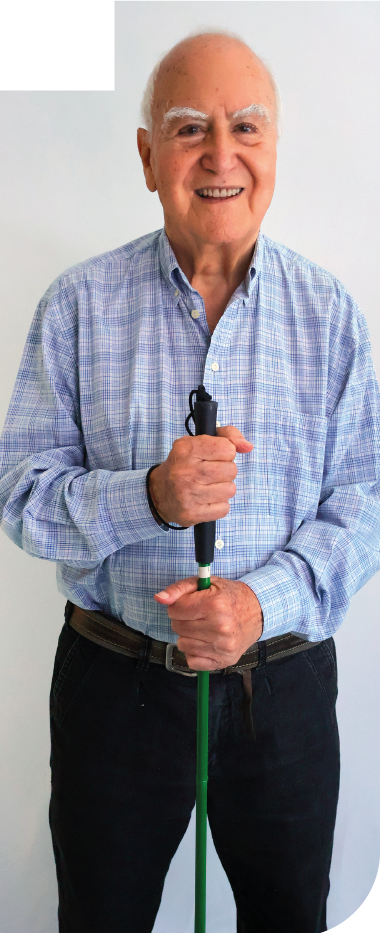
SUBTITLE: Photo: Nadir Chuahy, served by Fundação Dorina. END OF SUBTITLE.
Page 10
Visual Impairment in Brazil
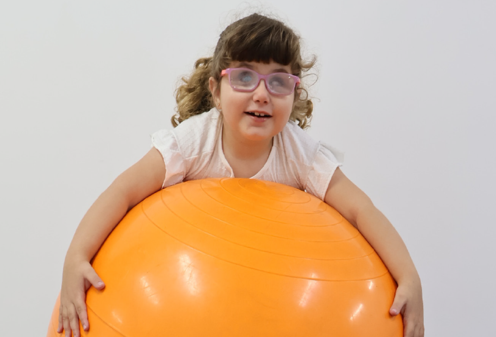
SUBTITLE: Photo: Alice Vitória Domingues, served by Fundação Dorina. END OF SUBTITLE.
In Brazil, data from the Brazilian Institute of Geography and Statistics (IBGE) indicate that approximately 6.5 million people have a visual impairment, including around 528,000 people who are blind and more than 6 million who have severe difficulty seeing, a condition characterized as low vision. These figures underscore the need for public policies, specialized services, and initiatives aimed at promoting accessibility, rehabilitation, and greater autonomy for people with visual impairments.
According to the World Health Organization (WHO), between 60% and 80% of cases of blindness could be prevented through early diagnosis and appropriate treatment.
In Brazil
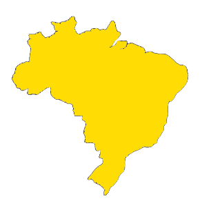
6.5 MILLION
people with visual impairments
528 THOUSAND
people who are blind
MORE THAN 6 MILLION
people with low vision
Sources
World Health Organization (WHO). World Report on Vision.
GBD 2020 Vision Loss Expert Group. The Lancet Global Health.
Brazilian Institute of Geography and Statistics (IBGE). Demographic Census and national surveys on disability.
International Agency for the Prevention of Blindness (IAPB).
Page 11
Message from the Chair of the Board of Trustees
Eduardo de Oliveira
Chair of the Board of Trustees
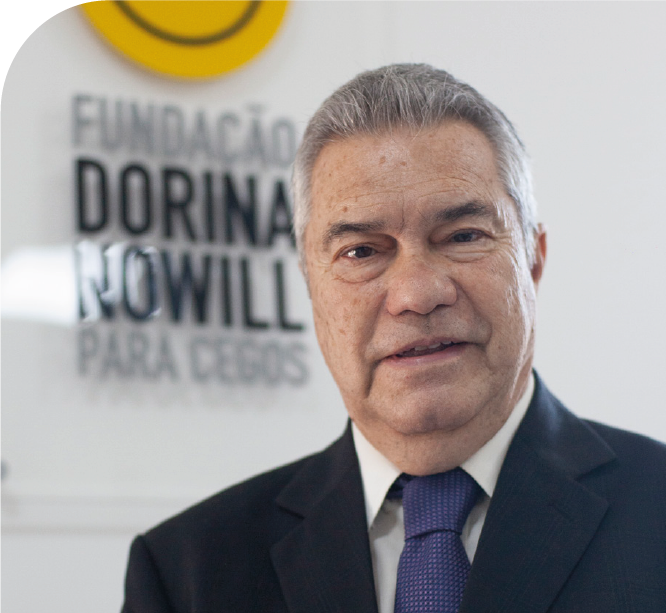
The year 2025 was one of great significance for Fundação Dorina Nowill para Cegos. In addition to marking my first year as Chair of the Foundation, it was also a time of preparation for the celebration of the Foundation’s 80th anniversary, which will take place in 2026. I assume this role with the commitment to continue a legacy built over decades through integrity, dedication, and meaningful social impact.
Throughout the year, we continued implementing strategic initiatives and key institutional projects to strengthen the Foundation. Among them, I would like to highlight the ongoing construction work and the continued development of Unit 2, expanding our service capacity and creating the conditions necessary for the Foundation to grow sustainably while maintaining the highest standards of quality and responsibility.
We also continued investing in expanding access to assistive resources and technologies, such as braille displays, while strengthening partnerships with public authorities, particularly State and Municipal Departments of Education. These collaborations are essential to extending the Foundation’s reach and bringing knowledge, support, and services to more people and communities.
Another important achievement this year was our continued effort to strengthen the Fundação Dorina brand in Brazil and internationally, reinforcing its recognition as a leading institution distinguished by innovation and a commitment to excellence. This progress reflects not only the quality of our work but also our ongoing dialogue with public authorities, institutional partners, and the many networks with which we collaborate.
More than preparing for a celebration, 2025 was a year of strengthening the Foundation’s future. As we approach our 80th anniversary, we reaffirm our commitment not only to the legacy we have built, but also to our institutional longevity, financial sustainability, and our ability to expand services while preserving the quality that defines our work.
We will continue working to strengthen this legacy, expand partnerships, support initiatives across multiple areas, and ensure that Fundação Dorina Nowill para Cegos remains a leading institution, prepared to meet the challenges of both the present and the future.
Page 12
Message from the Chief Executive Officer
Alexandre Munck
Chief Executive Officer
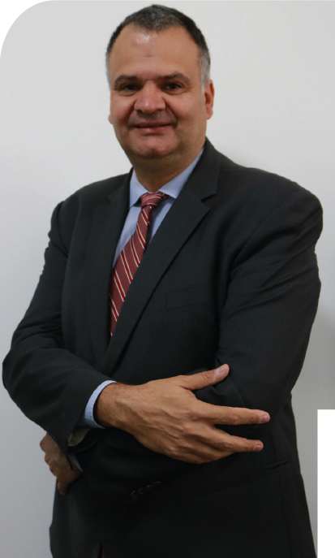
The year 2025 was marked by significant challenges and important achievements for Fundação Dorina Nowill para Cegos. Amid the modernization of our headquarters and the preparations for the Foundation’s 80th anniversary, we remained steadfast in our commitment to expanding access to high-quality services for people with visual impairments. We maintained all our activities at full capacity and, more importantly, reached new milestones in service delivery.
Even while the renovation work was underway, we recorded the highest number of clients served in the Foundation’s history, surpassing the milestone of 2,000 clients served throughout the year. This achievement reflects the dedication of our entire team and the strengthening of our outreach initiatives, which have enabled the Foundation to reach people who had not previously had access to rehabilitation, education, and inclusion services, particularly those living in situations of greater vulnerability or still excluded from digital inclusion.
The year was also marked by the strengthening of long-standing institutional partnerships, reinforcing that collaborative work is essential to ensuring greater autonomy and quality of life for people with visual impairments.
On the international front, the Foundation participated in strategic meetings and became a full member of the DAISY Consortium (Digital Accessible Information System), an international organization dedicated to developing standards and technologies that make books and other content accessible to people with visual impairments and other print disabilities.
Page 13
We also took part in major global events, including the 11th World Blindness Summit, expanding knowledge exchange and strengthening the Foundation’s role as an international reference in promoting accessibility, inclusive reading, and the rights of people with visual impairments.
We continued to advance the Foundation’s strategic plan through investments in the modernization of our headquarters, the expansion of our service facilities, and the enhancement of initiatives that are central to our history and identity, such as the Center for Memory and the Accessible Library, which preserve and share the legacy built over nearly eight decades.
Another highlight of the year was expanding the Foundation’s visibility and bringing our work to an ever-growing number of people, partners, and supporters. This effort is essential to ensuring financial sustainability and enabling the development of new projects, allowing us to continue growing responsibly while remaining true to our mission.
![Image: Photograph. A large stage with a big blue backdrop featuring geometric shapes in green and yellow, the text World Conference on Visual Impairment; SÃO PAULO, 2025, and an illustration of the silhouette of an eye with a globe. On the stage, on the left, a person is standing behind a lectern; in the center, several people are seated in chairs lined up in rows; on the right, a person is standing and signing in Brazilian Sign Language. At the top, there are spotlights with colored lights on a metal structure. At the bottom, a central staircase with red steps. In front of the stage, there are several rows of chairs occupied by an audience, with people seen from behind. End of image.](../resources/images/image_Image23577.png)
SUBTITLE: Photo: World Blindness Summit. END OF SUBTITLE.
Page 14
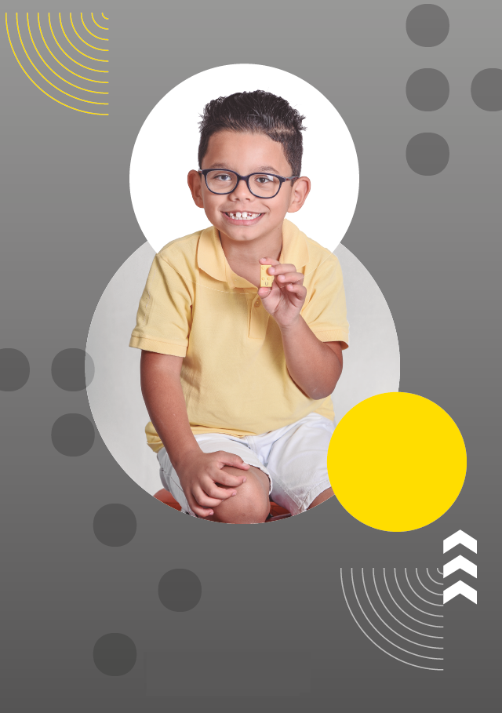
SUBTITLE: Photo: Served by Fundação Dorina. END OF SUBTITLE.
Page 15
2. Inclusion Support Services
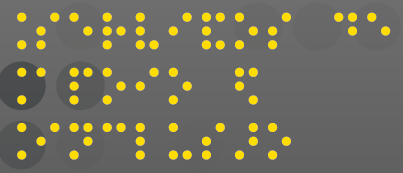
Page 16
Habilitation and Rehabilitation
![Image: Photograph. On the left, a woman with blonde hair tied back in a ponytail wears a gray cap, a red T-shirt, and gray pants. She is leaning forward, with one hand resting on her shoulder and the other holding a boy’s hand. The boy is wearing glasses, a gold-and-black firefighter’s helmet, and a firefighter’s uniform consisting of a gray jacket with reflective stripes. The uniform is too big for the boy. In the background, part of a red fire truck is parked on a gray concrete slab. End of image.](../resources/images/image_Image23600.png)
SUBTITLE: Photo: Visit to the Fire Department. END OF SUBTITLE.
For many visually impaired people, the Habilitation and Rehabilitation area is their primary point of entry into Fundação Dorina Nowill para Cegos. It is through these services that the process of developing autonomy, independence, and inclusion begins, involving not only the individuals served but also their families.
In 2025, Fundação Dorina reached another important milestone, providing more than 55,000 services throughout the year. Notably, the number of active children exceeded the number of young people served, reflecting the strengthening of the Foundation’s outreach initiatives and its investment in the early identification of visual impairments. Early diagnosis leads to better habilitation outcomes, fostering significant gains in child development while better preparing families to provide care and support.
With this focus, the area expanded its activities for children, adolescents, and their families, offering workshops and programs in the expressive, cultural, and educational fields, including art, judo, mini goalball, tai chi chuan, choir, theater, braille literacy, and braille transcription training for family members.
External activities also expanded in 2025, building on initiatives launched the previous year. These included inclusive rowing, promoted by the Brazilian Council of Ophthalmology, inclusive sailing in partnership with the Sailing Sense Project, and cultural activities at museums, movie theaters, theaters, Sesc cultural centers, and other venues. These experiences help strengthen autonomy, social interaction, and the right to inclusive leisure, enabling clients to apply the skills developed during their rehabilitation services while also providing the technical team with valuable opportunities for observation and assessment.
Internally, the team was strengthened through the recruitment of new professionals, bringing fresh perspectives and expanding the Foundation’s capacity to serve. In 2025, music therapy became firmly established as an important tool for fostering participation and a sense of belonging among the people served.
Takkyu Volley also remained an important part of the Foundation’s activities in 2025.
Page 17
As the first sport introduced at Fundação Dorina, it combines elements of volleyball and table tennis and promotes inclusion by enabling people of different ages, with or without disabilities, to participate together.
Another milestone of the year was the opening of the Low Vision Clinic at Fundação Dorina’s Unit 2. Combined with a specialized ophthalmology and orthoptics team, the new facility reduced waiting times for appointments, improved scheduling, and provided a more welcoming environment tailored to clients’ needs.
The Habilitation and Rehabilitation area also shared its expertise with other Brazilian institutions, helping expand services for visually impaired people through important partnerships with the Santa Catarina Association for the Integration of Blind People (ACIC) and the Florivaldo Vargas Mato Grosso do Sul Institute for Blind People (ISMAC).
Complementary box:
Takkyu Volley: Sport, Autonomy, and New Possibilities
Takkyu Volley is one of the activities offered within the Habilitation and Rehabilitation program. It can be practiced by people of all ages, with or without disabilities, encouraging social interaction and participation.
The activity creates an environment in which participants feel encouraged to explore movements and challenges they may not experience in other settings. For the technical team, the sport also serves as an important space for observation and follow-up, helping to expand support and learning strategies while contributing to the development of autonomy and greater participation for visually impaired people.
![Image: Photograph. Seven people are seated around a blue table tennis table, with a net in the center and an orange ball. Each person is holding an adapted paddle above the table; the paddle consists of a rectangular black handle. In the center, a man with short brown hair is wearing a pink polo shirt with white stripes and holding an adapted racket; next to the racket is an orange table tennis ball. To the left, a woman with long red hair is wearing a black blouse. Next to her, a woman with short brown hair is wearing a gray blouse. On the right are four men: two have short gray hair and are wearing light-colored shirts; another is wearing a black cap and a black shirt; and the last one is wearing a gray cap. In the background, a girl with her eyes closed and a man holding her hands are sitting in chairs; behind them are playground toys. End of image.](../resources/images/image_Image23613.png)
SUBTITLE: Photo: Takkyu Volley practice. END OF SUBTITLE.
End of complement.
Service Statistics
2,215
clients
2,585
family members
55,444
services provided
Page 18
Courses
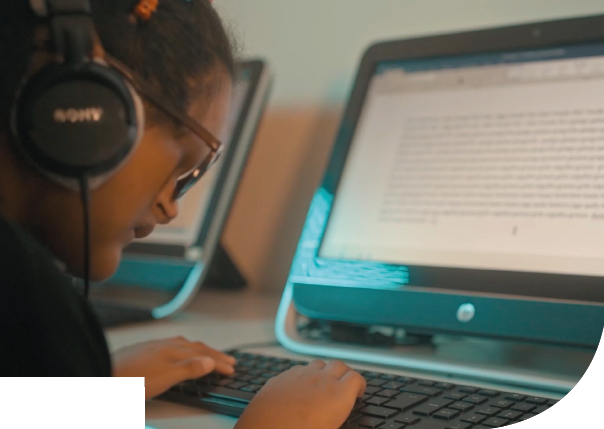
SUBTITLE: Photo: Computer Course. END OF SUBTITLE.
In 2025, Fundação Dorina introduced new courses for its clients, expanding opportunities for education, personal development, and professional growth. Throughout the year, 490 students participated in training activities across a wide range of areas.
The courses offered included Art Through All the Senses, customer service, choir, entrepreneurship in the digital age, computer skills, English, digital marketing, basic and intermediate massage therapy, meditation, braille music notation, music therapy, theater, administrative skills, as well as English and entrepreneurship classes designed specifically for adolescents.
These training opportunities contribute to strengthening autonomy, expanding opportunities for social inclusion, and developing skills that support the participation of visually impaired people in different aspects of everyday life and the workplace.
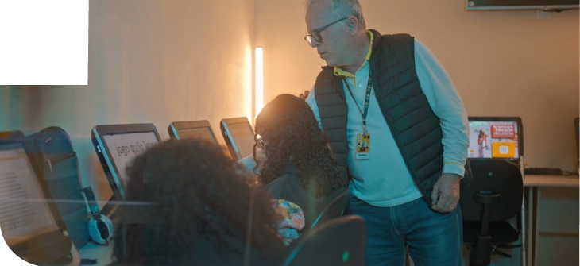
SUBTITLE: Photo: Computer class for clients served by Fundação Dorina. END OF SUBTITLE.
Page 19
Training Center
In 2025, the Introduction to Audio Description course was redesigned, and three classes were offered throughout the year. The Foundation also offered two classes of the Live Audiobook Narration course, expanding opportunities for professional training in the field of accessibility.
A total of 920 students enrolled in courses offered by the Training Center, representing a 59% increase compared to 2024, when 577 students participated. Of the total, 118 students with visual impairments received free access to the courses, a 57% increase over 2024, when 75 participants benefited from this initiative.
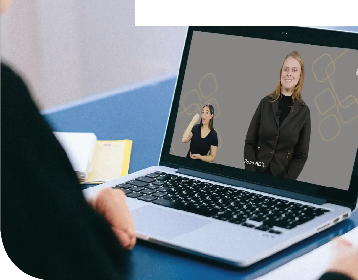
SUBTITLE: Photo: Introduction to Audio Description course. END OF SUBTITLE.
Page 20
Education and Cultural Services
Library and Dorinateca
Fundação Dorina maintains both the Library and the Dorinateca, which together expand access to reading for visually impaired people through the lending of physical books and access to accessible digital publications. These services bring together readers, institutions, and content producers, strengthening the circulation of publications and the sharing of accessible materials across Brazil.
In 2025, the Foundation saw growth in the number of registered users, the size of its collection, and the use of its services, further establishing the Library and the Dorinateca as leading centers for access to accessible books in Brazil. The participation of partner institutions also contributed to expanding the production and distribution of content in accessible formats.
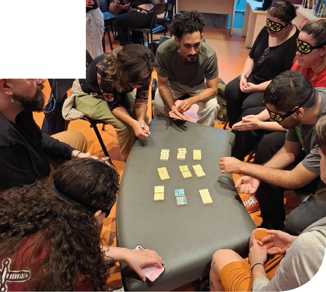
SUBTITLE: Photo: Educational activity with educators at Fábrica de Cultura Belém. END OF SUBTITLE.
713
new registered users in 2025
3,244
registered platform users
489
new registered readers
2,020
registered platform readers
224
new registered institutions
1,224
registered institutions
2,427
book downloads
1,020
book loans (circulating collection)
5,735
accessible titles available in the collection
Page 21
Inclusive Reading Network
The Inclusive Reading Network works in partnership with organizations in the fields of education, reading, and culture across Brazil, promoting the distribution of accessible books and promoting dialogue on the implementation of accessibility practices in a variety of settings. The Network seeks to expand access to reading for visually impaired people, while also supporting the training of professionals and institutions committed to inclusion.
In 2025, the team participated in events related to books, reading, and accessibility across different regions of Brazil. Highlights included braillevery, held in João Pessoa (Paraíba); the 11th Reading for All Seminar, in Salvador (Bahia); the Reading Suitcase Project (Mala de Leitura), in Agudo (Rio Grande do Sul); the 24th Ribeirão Preto International Book Fair, in São Paulo; and the 4th Federal District Accessibility Fair.
Throughout the year, the Foundation also organized the Inclusive Reading Meetings, a training series held at Fundação Dorina’s headquarters, bringing together partners from different regions of Brazil. As part of this initiative, the Network Invites (Rede Convida) live webinar series featured guest speakers who shared their experiences in producing accessible educational materials, organizing inclusive book clubs, promoting cultural accessibility, and publishing books in multiple accessible formats.
Key Network Figures:
100
activities promoting accessible and inclusive reading
1,210
participants in virtual activities (live webinars, workshops, and partnership meetings)
1,468
participants in in-person activities (workshops, seminars, and book fairs)
1,612
institutions received donations of accessible books
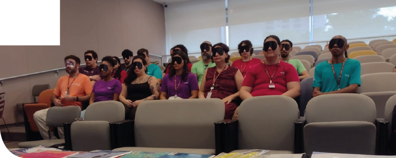
SUBTITLE: Photo: Mediation activity with librarians at São Paulo Library. END OF SUBTITLE.
Page 22
Center for Memory
Throughout 2025, Fundação Dorina carried out the Dorina Nowill Collection: Documentation and Conservation project, aimed at organizing, preserving, and digitizing the collection of the Dorina Nowill Center for Memory. As a result, a significant portion of the collection was made available through an online platform, expanding public access to the institution’s historical archives.
At Fundação Dorina’s headquarters, visitors also took part in guided tours led by the Educational Programs team, featuring the collection and exhibition space. During the first half of the year, visitors explored the exhibition “And That’s How It All Began...”, dedicated to the Foundation’s history. At the same time, work began on the new exhibition “8 or 80,” created to celebrate Fundação Dorina’s 80th anniversary, with its opening scheduled for March 2026.
The Center for Memory also participated in events and initiatives dedicated to the preservation of memory, culture, and inclusion, including:
• 2nd Meeting on Archives, Culture, and Social Justice, organized by the Rui Barbosa Foundation (FCRB) in partnership with the Graduate Program in Information Science at Fluminense Federal University (PPGCI/UFF).
• 1st Seminar “Women in Motion: Law No. 14,986/24.”
• Participation in the 23rd National Museum Week, in partnership with the São Paulo Museum of Modern Art (MAM-SP) and the São Paulo Municipal Department of Education.
Center for Memory Highlights
195
guided tours conducted
1.575
visitors
2,010
historical items available in the digital collection
![Image: Reproduction of a web page. At the top, there is a yellow banner with the text: Accessible Digital Collection and the logos of the Dorina Foundation and the Dorina Nowill Memory Center. Below, a navigation bar with a Keyword field and the buttons: Search, Clear, and Advanced Search. In the center, a horizontal banner with rounded corners; on the left, a photograph of a table with objects on it; on the right, a black-and-white photograph of a building; between the two, a cropped photograph of a young Dorina Nowill, who has short, voluminous hair combed to the side, wears a pearl necklace, and a dark blouse. Above the photographs is the text Dorina Nowill written in yellow Braille dots. Below, on the left, the text: Dorina Nowill: History and Memory. At the bottom, black-and-white portraits of Dorina Nowill, each with a caption, such as: Portrait of Dorina Nowill, 1940s–1950s; Portrait of Dorina Nowill, 1940s–1950s; Portrait of Dorina Nowill, 1950s–1960s. End of image.](../resources/images/image_Image23829.png)
SUBTITLE: Photo: Accessible digital collection. END OF SUBTITLE.
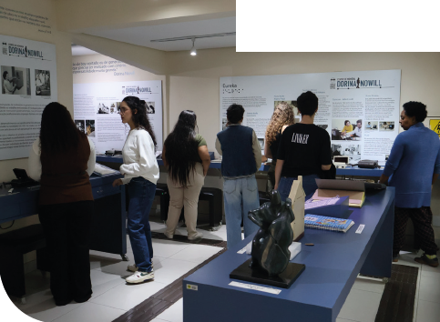
SUBTITLE: Photo: Guided tour of the Center for Memory. END OF SUBTITLE.
Page 23
Employability
In 2025, the Employability area continued to provide career guidance and prepare visually impaired people for the world of work. Throughout the year, 374 clients participated in one-on-one career counseling sessions and training activities focused on skills development and referrals to employment opportunities.
Awareness initiatives were also expanded through lectures, workshops, and events that reached 3,351 participants. These activities aimed to raise awareness about the inclusion of people with visual impairments in the labor market while strengthening dialogue with companies and institutions.
The team also worked closely with 201 companies, establishing partnerships to create employment opportunities and promote more accessible and inclusive workplaces.
Among the year’s highlights was the launch of Dorinacast, Fundação Dorina’s institutional videocast, created to share inspiring stories, discuss topics related to inclusion, and showcase the Foundation’s work to a broader audience.
374
clients receiving career guidance
3.351
people reached through awareness initiatives
201
partner companies
Complementary box:
Dorinacast Strengthens Awareness of Inclusion and Employability
In 2025, Fundação Dorina launched Dorinacast, an institutional videocast dedicated to discussing topics related to the inclusion, autonomy, and participation of people with visual impairments in society. Available on YouTube and Spotify, the program features interviews and conversations with invited guests, exploring a wide range of topics connected to the pathways to employability for people with visual impairments. The initiative helps expand the reach of Fundação Dorina’s awareness efforts, fostering dialogue with society and reinforcing the importance of inclusion in the workplace.
End of complement.
Page 24
LEGO® Braille Bricks
Created in 2020, the LEGO® Braille Bricks program is an initiative developed by Fundação Dorina Nowill para Cegos in partnership with the LEGO Foundation, Denmark, to support inclusive literacy. The educational resource uses specially designed bricks that combine the braille alphabet with printed letters, enabling children with and without visual impairments to learn together in a playful and collaborative way.
Throughout 2025, the program significantly expanded its presence across different regions of Brazil, establishing itself as a widely adopted educational resource. The number of participating educators reached its highest level since the program’s launch, as did the number of partnerships established with Municipal Departments of Education, specialized institutions, and private schools. Teacher training has remained one of the program’s main pillars, enabling the resource to be integrated into everyday classroom practice and reach an ever-growing number of students.
During the year, the program was featured at several events and professional development initiatives, including the 11th World Blindness Summit, where practical demonstrations of LEGO® Braille Bricks and hands-on workshops were conducted with educators and specialists from Brazil and abroad. The 1st Regional LEGO® Braille Bricks Workshop was also held, providing educators who had previously completed the training with an opportunity to deepen their pedagogical practices and exchange experiences.
Another highlight was the 3rd LEGO® Braille Bricks Award, which recognized inclusive teaching practices developed by educators from different regions of Brazil. The finalist initiatives received awards with the support of institutional partners, encouraging the continuation and wider adoption of these classroom experiences.
In 2025, Fundação Dorina also inaugurated the LEGO® Braille Bricks Interactive Room, designed as a reference space for training and demonstrations of the educational resource. The facility was created to promote the sharing of best practices, expand knowledge of the braille literacy process, and strengthen the use of inclusive educational resources in schools.
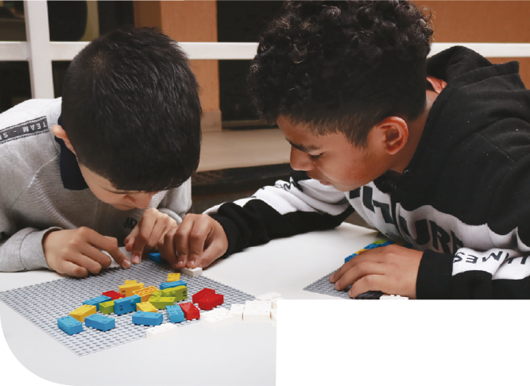
SUBTITLE: Photo: Braille literacy using LEGO® Braille Bricks. END OF SUBTITLE.
Page 25
LEGO® Braille Bricks Numbers
1.585
participating educators
91
formalized partnerships
52
Municipal Departments of Education
44
specialized institutions
3
private schools
85
municipalities involved
1.261
participating schools
3.457
kits distributed
47.550
students without visual impairments reached
1.585
students with visual impairments reached
Complementary box:
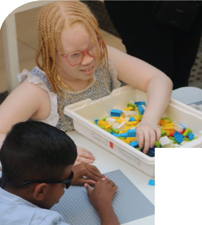
SUBTITLE: Photo: Learning Through Play and Inclusion. END OF SUBTITLE.
Inclusive Literacy and Educational Innovation
LEGO® Braille Bricks has established itself as an innovative educational resource for inclusive literacy. By combining the braille system with printed letters in a playful and interactive format, the resource enables children with and without visual impairments to learn together, encouraging collaboration, the exchange of experiences, and the development of reading and writing skills in an accessible way. This approach expands teaching possibilities in the classroom and supports educators in adopting more inclusive practices, encouraging the active participation of all students in the learning process.
End of complement.
Page 26
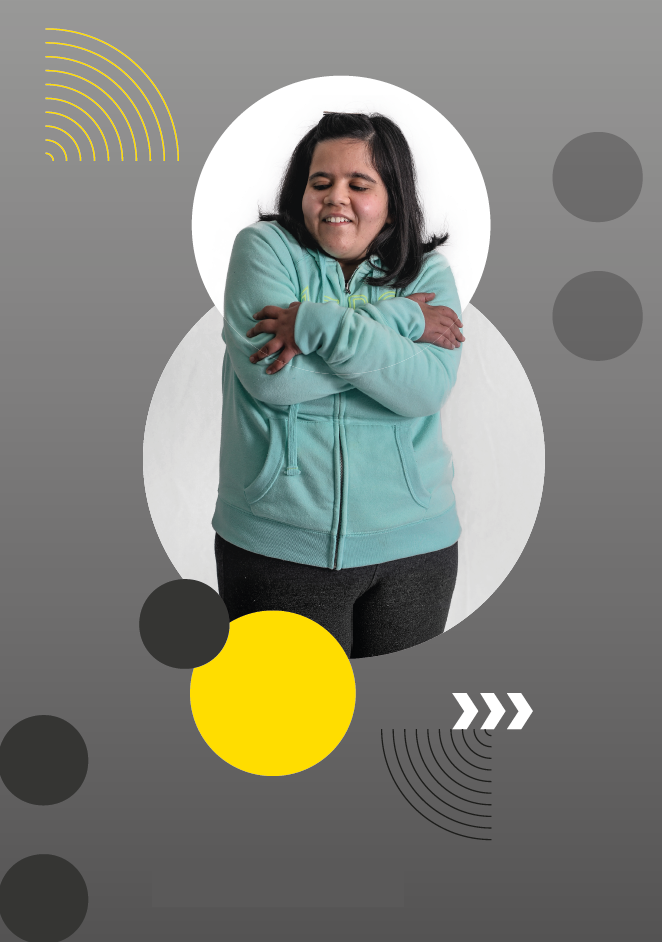
SUBTITLE: Photo: Bruna Ramos, served by Fundação Dorina. END OF SUBTITLE.
Page 27
3. Accessibility Solutions
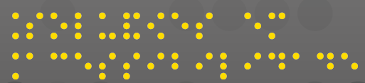
Page 28
Commercial
In 2025, Fundação Dorina’s commercial strategy focused on strengthening relationships with strategic clients and expanding opportunities in the Braille, Audiovisual, and Digital areas. In the Braille area, efforts were concentrated on consolidating partnerships with educational publishers, resulting in increased production throughout the year for clients such as Arco Educação, Somos Educação, Moderna, and Etapa.
In the Audiovisual area, the Foundation continued its partnerships with Audible and Bookwire, with a particular focus on audiobook production, helping expand the availability of accessible titles in the publishing market. In the Digital area, Fundação Dorina continued to be recognized for producing image descriptions and Digital Educational Objects (DEOs), as well as developing accessible content in EPUB 3 and HTML, in partnership with publishers including SM Educação, Editora do Brasil, and Saber Educação. In 2025, the area reached 59,383 pages produced, based on the original print-page metric, and made 1,437 titles accessible. These figures reflect the continued growth in demand and the Foundation’s expanding role in producing accessible digital content.
The Commercial area also resumed strategic partnerships and created new opportunities through consulting projects, with highlights including initiatives such as Nestlé – Talking Labels (Rótulos que Falam) and VML – Colors You Can Feel (Cores que Tocam). The team also delivered lectures and workshops focused on accessibility awareness, including initiatives developed in partnership with HOYA Lens Brazil.
Throughout the year, the Commercial area exceeded its performance target, delivering results above expectations while expanding the number of projects completed.
Complementary box:
Commercial Highlights
TARGET:
BRL 5.316 MILLION
ACHIEVED:
BRL 5.317 MILLION
QUOTES ISSUED:
1,392
PROJECTS/WORK ORDERS COMPLETED:
899
End of complement.
Fundação Dorina also participated in major industry events, including Bett Brasil, the Rio International Book Biennial, the 4th Meeting of Publishers, Booksellers, Distributors, and Printers, and the Paraty International Literary Festival (FLIP), strengthening institutional relationships and fostering new partnership opportunities.
Page 29
Audiovisual
In 2025, the Audiovisual area maintained a strong production pace, consolidating the progress achieved in recent years through studio modernization and the continued strengthening of its technical team. The year was marked by increased demand for accessible content, particularly for educational, institutional, and cultural projects. This expanded Fundação Dorina’s work in the production of audiobooks, audio description, and accessibility resources for a wide range of media.
Throughout the year, the team participated in every stage of production, from planning through final delivery, ensuring that accessibility was considered from the outset of each project. This working model has contributed to higher technical quality, shorter production times, and an increase in the number of projects delivered.
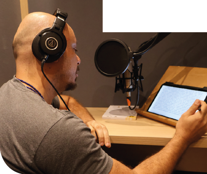
SUBTITLE: Photo: Volunteer recording in Fundação Dorina’s Audiovisual Studio. END OF SUBTITLE.
Complementary box:
Production Highlights:
• Educational audiobooks for the São Paulo Municipal Department of Education
• Literary audiobooks for Audible, Bookwire, and SPTrans
• Audio description for out-of-home advertising campaigns produced for JCDecaux
• Audio description for exhibitions developed for clients including MIS, Unibes Cultural, Vulica Brasil, and Wilson Tafner
• Accessibility services for works included in the National Textbook Program (PNLD), produced for SM Educação and Editora FTD
End of complement.
AUDIO
264
PROJECTS
43,640 pages produced
VIDEO
481
VIDEOS PRODUCED
420 accessibility productions, including audio description, Brazilian Sign Language (Libras), and subtitles for deaf and hard-of-hearing audiences (SDH)
Page 30
Editorial and Printing
Complementary box:
DIGITAL EDITORIAL
The Digital Editorial area specializes in converting educational, literary, and Other text-based materials into accessible digital formats, such as HTML5 and EPUB 3, ensuring that people with visual impairments can navigate and access their content.
BRAILLE EDITORIAL AND PRINTING
The Braille Editorial and Printing areas specialize in the adaptation, proofreading, production, and printing of Braille materials, transforming educational, literary, and informational content into accessible physical formats for people who are blind, with quality, accuracy, and accessibility.
End of complement.
Demand for the Foundation’s Braille Editorial and Printing services continued to grow throughout 2025, requiring continuous improvements to production processes, expanded technical capacity, and further strengthening of the team. The increasing volume of projects reinforces Fundação Dorina’s position as a national leader in the production of accessible materials for people with visual impairments.
Services provided to educational institutions, publishers, and educational systems continued to expand, supported by the continuation of key partnerships and the addition of new clients throughout the year. The production of materials for Brazil’s National Textbook Program (PNLD) remained one of the Foundation’s primary areas of activity, requiring a high level of organization and precision, particularly in adapting complex content containing large volumes of information, charts, and visual elements.
The Braille Printing area maintained a strong production pace, serving both commercial projects and the Foundation’s internal needs, as well as large-scale institutional contracts. Its work extends beyond Braille printing to include technical preparation, specialized proofreading, and quality control, ensuring that every publication reaches readers with full accessibility. The continued growth of Braille and accessible digital production reflects Fundação Dorina’s commitment to democratizing access to knowledge, keeping pace with technological advances while expanding opportunities for inclusion for increasingly diverse audiences.
Throughout 2025, despite ongoing renovations at the Foundation’s headquarters and operational challenges, the Editorial and Printing areas maintained a high level of productivity, demonstrating the institution’s ability to adapt, innovate, and continue expanding its reach without interrupting services to the population.
DIGITAL EDITORIAL HIGHLIGHTS
PAGES CONVERTED:
59,383
ACCESSIBLE TITLES PRODUCED:
1,437
Page 31
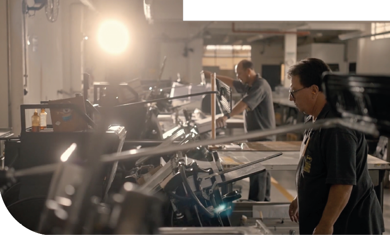
SUBTITLE: Photo: Fundação Dorina Braille Printing House. END OF SUBTITLE.
EDITORIAL HIGHLIGHTS
COMMERCIAL PAGES:
171,290
INTERNAL PROJECT PAGES:
19,652
PAGES EDITED, PROOFREAD, AND CORRECTED:
129,349
TOTAL PAGES PROCESSED IN 2025:
320,291
BRAILLE PRINTING HIGHLIGHTS
COMMERCIAL BRAILLE PAGES PRINTED:
1,041,052
BRAILLE PAGES PRINTED FOR INTERNAL PROJECTS:
6,919,665
BRAILLE PAGES PRINTED FOR PNLD 2023 AND PNLD 2025:
3,041,587
TOTAL BRAILLE PAGES PRINTED IN 2025
11,002,304
Page 32
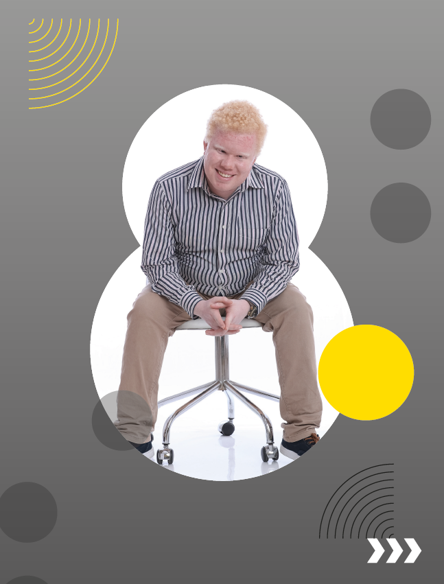
SUBTITLE: Photo: Thiago Pereira, served by Fundação Dorina. END OF SUBTITLE.
Page 33
4. Administrative Areas
Page 34
Volunteering
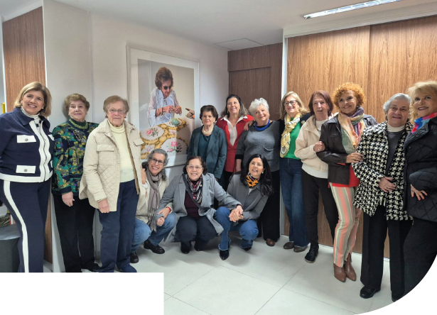
SUBTITLE: Photo: Fundação Dorina volunteers. END OF SUBTITLE.
In 2025, Fundação Dorina’s Volunteering Program engaged 230 active volunteers, who contributed across a variety of areas, supporting administrative activities, events, institutional initiatives, and client services. Throughout the year, 13 corporate volunteer engagement initiatives were carried out, directly reaching 545 participants.
Another highlight was the mobilization of 139 skilled volunteers to support the 11th World Blindness Summit, expanding the Foundation’s capacity to deliver activities during the event.
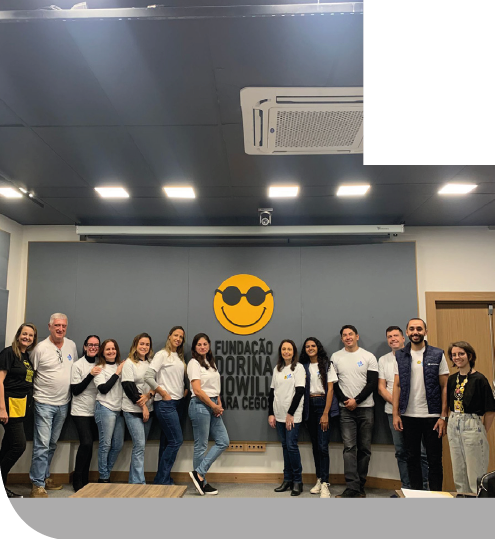
SUBTITLE: Photo: Fundação Dorina volunteers. END OF SUBTITLE.
Key Initiatives in 2025:
MASTERCARD
CHRISTMAS BAZAAR
A volunteer engagement initiative designed to support the Foundation’s long-term sustainability. Volunteers assisted with merchandise sorting, booth organization, and visitor services during the Christmas Bazaar. Proceeds from the event helped fund the Foundation’s free programs and services
PROJETO OLHOS DE ÁGUIA (EAGLE EYES PROJECT)
COLÉGIO PIONEIRO
An initiative developed in partnership with Colégio Pioneiro, engaging students aged 15 to 17 in a seven-month educational program. The project explored topics such as diversity, equity, and inclusion, bringing students closer to the realities experienced by people with visual impairments and encouraging civic engagement through volunteer work.
AMIS
MORUMBI ASSOCIATION FOR SOCIAL INTEGRATION
The Foundation’s children’s choir performed traveling a cappella Christmas concerts, creating opportunities for connection, community, and celebration among clients, staff members, and volunteers.
Page 35
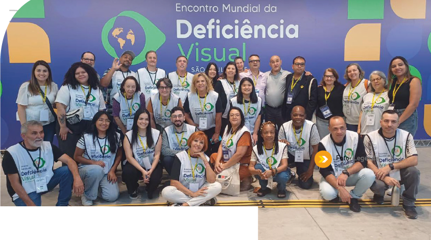
SUBTITLE: Photo: Volunteers at the 11th World Blindness Summit. END OF SUBTITLE.
PANORAMA DO CHORO
A musical performance by the Panorama do Choro ensemble, offered as part of the Foundation’s initiatives to promote access to culture and leisure for visually impaired people, reinforcing Fundação Dorina’s commitment to activities that expand clients’ opportunities for social participation.
THEREZA KORTAS SEWING STUDIO
Inauguration of the new space dedicated to the Foundation’s sewing workshop, made possible with the support of volunteers and partners. The new facility enhanced the infrastructure and improved the conditions for carrying out the workshop’s activities.
11TH WORLD BLINDNESS SUMMIT
Fundação Dorina coordinated 139 volunteers who supported the event in roles including reception, event organization, participant assistance, and operational support. This initiative represented one of the Foundation’s largest volunteer mobilization efforts of the year.
Companies and Organizations Participating in the 2025 Volunteering Program:
• Colégio Pioneiro
• Panorama do Choro
• Tullet Prebon
• Aché Laboratórios
• Mastercard
• Kyndryl
• Itaú
• Chiesi Laboratórios
• AMIS – Morumbi Association for Social Integration
Page 36
Human Resources
In 2025, the Human Resources area worked to strengthen Fundação Dorina’s teams, focusing on attracting new talent and supporting the continuous professional development of staff. These efforts contributed to expanding and improving the services provided to clients.
Throughout the year, the Foundation maintained an average workforce of 147 employees per month. Across its recruitment processes, Fundação Dorina received more than 8,000 applications through its talent acquisition platform, averaging approximately 140 applicants per vacancy. This level of interest reflects professionals’ desire to work for an organization aligned with social purpose and committed to inclusion.
The area also focused on maintaining a qualified and collaborative work environment, helping ensure appropriate conditions for team development and for the continuity of the Foundation’s activities.
Page 37
![Image: Photograph. Two people are walking side by side down an indoor hallway. On the left, a woman with straight, shoulder-length black hair is wearing a blue-and-white plaid shirt and black pants. On the right, a man with short brown hair wears sunglasses, a gray short-sleeved printed shirt, and black pants; he holds a long white cane in his left hand, positioned in front of his body, while holding the woman’s arm with his right hand. On the right, a window with bars and glass. The floor is white with tactile paving on top of it. End of image.](../resources/images/image_Image24119.png)
SUBTITLE: Photo: Carlos Alberto, served by Fundação Dorina, and his wife, Aldenice. END OF SUBTITLE.
Page 38
Fundraising
The Fundraising area plays a strategic role in ensuring the Foundation’s long-term sustainability. It is responsible for strengthening relationships with supporters and continuously expanding funding sources. The team’s work includes maintaining existing partnerships, engaging new donors, and developing initiatives that ensure the continuity and expansion of the Foundation’s free services.
In 2025, Fundação Dorina closed the year with 11,651 active donors, reflecting ongoing efforts to strengthen donor retention and enhance supporter engagement initiatives. Recurring donations totaled R$ 5,651,607.09, making a significant contribution to sustaining the Foundation’s institutional activities. In the area of institutional partnerships, more than 25 companies supported projects through direct sponsorships and tax incentive mechanisms, enabling the Foundation to raise R$ 3,665,816.98. The Foundation also continued to secure funding through programs and public funds such as FUMCAD, CONDECA, PROAC, and the Rouanet Law, ensuring financial support for programs serving visually impaired people throughout Brazil.
The Foundation’s Individual Income Tax Donation Campaign recorded growth compared with the previous year, raising R$ 164,965.84. This result reflects targeted communication and outreach efforts designed to encourage this form of charitable giving.
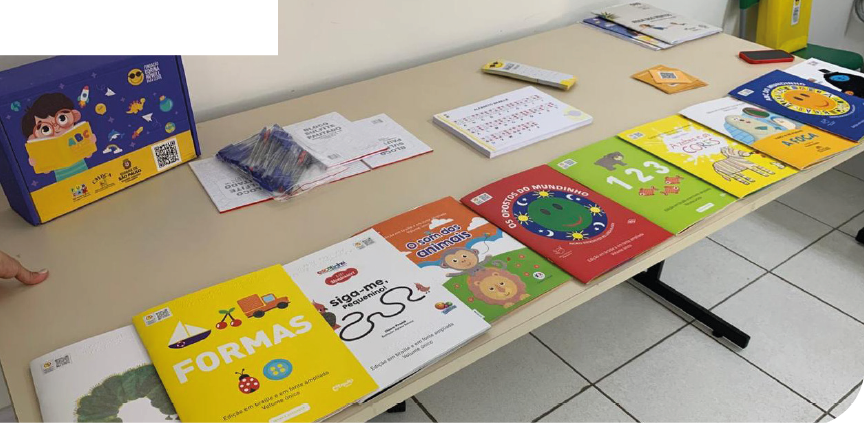
SUBTITLE: Photo: Braille books and educational materials produced by Fundação Dorina. END OF SUBTITLE.
Page 39
Complementary box:
Seasonal Bazaars Expand Fundraising Efforts
In 2025, Fundação Dorina introduced a new fundraising strategy by organizing seasonal bazaars tied to major commemorative dates. Throughout the year, three editions were held —for Mother’s Day, Children’s Day, and Christmas — raising a combined total of more than R$ 200,000.00. The initiative helped diversify the Foundation’s funding sources while strengthening the engagement of partners, volunteers, and supporters in its mission.
End of complement.
Our Impact in Numbers
11,651
active donors
R$ 164,965.84
raised through Individual Income Tax donations
MORE THAN R$ 200,000.00
raised through seasonal bazaars
R$ 404,941.64
raised through the São Paulo Tax Receipt Program (Nota Fiscal Paulista – NFP)
R$ 3,665,816.98
raised through contributions from corporate partners
R$ 5,651,607.09
raised through recurring donor contributions
![Image: Photograph. A spacious room with gray floors and gray walls featuring rectangular panels; on the ceiling are several white rectangular light fixtures and an air conditioner. On the left is an interior window with a brown frame; below it is a white metal basket containing products, and next to it is a yellow shelf with boxes of toys. On the right, there is a white rack with bags and belts hanging from it. Behind it, on both sides, there are clothing racks with many items of clothing hanging from them. On the right side and in the background, there are brown tables with products on display. End of image.](../resources/images/image_Image24189.png)
SUBTITLE: Photo: Seasonal Bazaar. END OF SUBTITLE.
Page 40
Corporate Partners
Vision Partners
Meet the companies that helped make Fundação Dorina’s achievements and progress possible through sponsorships, donations, and support for projects carried out throughout the year.
DIAMOND | 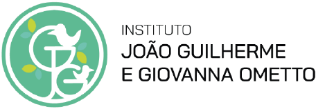 |
GOLD |
|
BRONZE |
|
COPPER |
|

![Image: The Banco Daycoval logo consists of the name in gray and blue letters and, in the lower left corner, an illustration of a small gray and blue rectangle. ;The Loga logo consisting of the name in black letters, with the letters O and G in blue and green forming the infinity symbol. ;The Prada Foundation logo consists of the name in black uppercase letters, with an illustration of a tree with green and blue leaves above it. ;The Rodobens Institute logo consists of the name in green letters. ;The Tenda Atacado logo consists of the name in white letters on a blue and red rectangle. End of image.](../resources/images/image_2.png)
![Image: The Atlas Schindler logo consists of the name in red letters; above it is an illustration of a gray circle with a triangle in the center, at the bottom. ;The Bic logo consists of the name in black uppercase letters inside an orange rectangle; on the left is an illustration of a character with a black spherical head and yellow clothing, holding a pen behind his back. ;The Bic Corporate Foundation logo consists of the Bic logo, with the name in black letters below it. At the bottom is the phrase We Give to Create; in the upper-left corner are colorful arabesques. ;CART logo, consisting of an illustration of the silhouette of a vertical rectangle on top of a blue and yellow circle; below, the name in blue capital letters. ;The FF Seguros logo consists of the name in blue letters; between the words is an illustration of two greater than symbols in black. On the right, at the bottom, is the text A FAIRFAX Company. ;The Helena Florisbal Institute logo consisting of the name in green uppercase letters and, on the left, an illustration of a stick figure with arms raised. ;The Societe Generale Responsibility Institute logo consists of the name in black uppercase letters and, on the left, an illustration of a red and black square. ;The Alupar logo consisting of the name in blue letters with a green bar at the top. ;The Taesa logo consisting of the name in blue lowercase letters with a colored asterisk in the upper right corner. ;The Trench Rossi Watanabe logo, consisting of the name in red letters and a red period. End of image.](../resources/images/image_3.png)
Page 41
São Paulo Tax Receipt Program (Nota Fiscal Paulista – NFP)
The São Paulo Tax Receipt Program (Nota Fiscal Paulista – NFP) is one of Fundação Dorina’s key fundraising initiatives. Through partnerships with retail businesses, collection boxes are made available for customers to donate tax receipts issued without a taxpayer identification number (CPF). These receipts can then be allocated to the Foundation and converted into funding that supports programs promoting inclusion and accessibility for visually impaired people.
In 2025, the campaign engaged 33 volunteers, who entered 1,385,633 tax receipts into the system over the course of the year, generating R$ 404,941.64 in funding. The continued success of this initiative highlights the importance of public participation and partnerships with the retail sector in securing resources that directly support the maintenance and expansion of the Foundation’s services.
Page 42
Communications and Marketing
Fundação Dorina’s Communications and Marketing area works in close alignment with the Foundation’s institutional strategy to expand its impact, strengthen brand positioning, and increase the visibility of its initiatives. Its work connects the Foundation’s mission with the diverse audiences it serves — including clients, employees, board members, partners, and society at large — transforming information into meaningful engagement, awareness, and opportunities.
Throughout 2025, the area focused on strategic priorities that strengthened the Foundation’s presence and relevance nationwide. These included reinforcing the Foundation’s brand as a leading reference in inclusion, establishing its institutional position as an authority on accessibility for visually impaired people, increasing the visibility of its programs and initiatives, and fostering the ongoing engagement of partners and the broader community.
Through this approach, Communications not only supports the Foundation’s institutional activities but also serves as a strategic driver of its growth and long-term sustainability. In this context, communication is also a means of inclusion: amplifying voices, expanding access to information, strengthening relationships, and advancing the Foundation’s mission every day.
![Image: Photograph. On a soccer field, rows of people standing side by side. On the left, a group of men wears white and green uniforms, and there is a man in a blue uniform. Next to them, there are several children wearing yellow vests with the logo of the Dorina Nowill Foundation for the Blind; some children are holding long green or white canes. Next to them are four men in black uniforms; two of them are holding yellow and orange flags, and next to them is a soccer ball. Behind them is a group of men in white and black uniforms and a man in a yellow uniform. Next to them are more children in yellow vests. In the background are bleachers and a large green sign with a circular crest and the word PALMEIRAS in white. On the right, a purple and green arch with the text BRASILEIRÃO in white. End of image.](../resources/images/image_Image24354.png)
SUBTITLE: Photo: Clients served by Fundação Dorina joined players on the field before the Palmeiras vs. Bahia match. END OF SUBTITLE.
Page 43
Highlights from 2025. Below are some of the year’s most significant events, planned and coordinated by the Communications and Marketing team.
Bett Educar
Fundação Dorina participated in one of Brazil’s leading education and technology events, increasing its visibility among educators, public education leaders, and specialists while reinforcing its position as a leader in inclusive educational innovation.
“Catch the Vision” Campaign
Brown April
As part of Brown April, the national eye health awareness campaign, Fundação Dorina launched the “Catch the Vision” campaign to promote blindness prevention and raise awareness of visual health. The initiative reached broad audiences through digital and institutional channels, helping disseminate information on eye health and mobilize public engagement around the cause.
3rd LEGO® Braille Bricks Award
This initiative recognized innovative teaching practices developed by educators from across Brazil, showcasing the potential of LEGO® Braille Bricks as a tool for inclusive literacy while strengthening a nationwide network of educators committed to inclusion.
Brazilian Congress of Ophthalmology
Fundação Dorina participated in one of the country’s leading ophthalmology conferences, expanding dialogue with healthcare professionals, strengthening strategic partnerships, and reinforcing its position as a reference in the field of vision rehabilitation.
World Blindness Summit
The Foundation participated in this international event, fostering the exchange of knowledge, strengthening collaboration with global organizations, and advancing the agenda for inclusion and accessibility for people with visual impairments.

Page 44
Executive, Administrative, and Financial Management
In 2025, Fundação Dorina implemented a range of initiatives to strengthen its internal processes, enhance governance practices, and ensure institutional compliance, with a focus on organizational effectiveness, oversight, and transparency. These efforts included updating internal policies, delivering staff training, developing and standardizing internal procedures, and monitoring strategic initiatives. Together, these actions contributed to the Foundation’s long-term sustainability and the effective operation of the organization.
Internal Processes
Throughout 2025, Fundação Dorina strengthened its compliance and governance framework by developing internal policies, awareness materials, training programs, and institutional initiatives designed to foster an ethical, transparent, and inclusive organizational culture.
Guides and Awareness Materials
• Human Rights Guide
• Public Officials Interaction Guide
• Workplace Harassment and Sexual Harassment Guide
• Compliance Officer Roles and Responsibilities Guide
• Violence Against Women Awareness Guide
New Policies
• Compliance Program
• Risk Management and Compliance
Dissemination of Integrity Nuggets
• Psychosocial Risks Policy (NR-1)
• Anti-Transphobia, Anti-Biphobia, and Anti-Homophobia Policy
• World Day Against Child Labour (June 12)
• LGBT+ Pride: Respect for Differences
• The Importance of Risk Management, including the launch of the Foundation’s risk mapping initiative
• 12th Anniversary of Brazil’s Anti-Corruption Law (Law No. 12,846/2013) (August 1)
• International Day of Persons with Disabilities (September 21)
• World Mental Health Day (October 10)
Page 45
• National Anti-Money Laundering Day (October 29)
• Anti-Bullying Awareness
• Black Awareness Day (November 20)
• International Anti-Corruption Day (December 9)
• International Human Rights Day (December 10)
Corporate Risk Map
• Key risks were mitigated through the implementation of robust protocols and processes.
Development of the Compliance Risk Assessment Methodology (Impact and Likelihood)
• Conducted 12 cross-functional employee interviews to identify compliance risks.
Social Impact
• Continued implementation of the Habilitation and Rehabilitation Programs, while expanding the development of new adaptive sports talent through the inclusion of an additional partner organization.
• Expansion of the Remote Habilitation and Rehabilitation Program nationwide, extending Fundação Dorina’s services beyond the state of São Paulo through partnerships with ACIC, in Santa Catarina, and ISMAC, in Mato Grosso do Sul.
• Development of new adaptive sports talent through partnerships with Naurú (athletics) and CADEVI (goalball).
• Launch of a Goalball and Judo Training Program in partnership with ISMAC, in Mato Grosso do Sul.
• Implementation of a grant program to support organizations affected by the May 2025 floods in Rio Grande do Sul. Eight organizations received assistance to rebuild their facilities and replace essential equipment and materials.
![Image: Photograph. In a meeting room, a man is standing in the background, gesturing. Behind him is a projection screen displaying an illustration of a smiling face wearing sunglasses and the text ACCESSIBILITY SOLUTIONS. In the foreground, several people are seated behind brown tables arranged in a rectangular formation. On the tables are laptops and books. In the background, windows with white blinds are slightly ajar, and on the left wall, there is a yellow and white wall with black-and-white portraits and the text PRESIDENTS’ GALLERY. End of image.](../resources/images/image_Image24376.png)
SUBTITLE: Photo: Continuous improvement through professional development and training. END OF SUBTITLE.
Page 46
Project Management
In 2025, Fundação Dorina managed a portfolio of 46 projects at different stages of development, funded through three primary sources: Tax Incentive Programs, Government Funds, and Private Social Investment.
Throughout the year, projects progressed through multiple phases, including proposal development, fundraising, grant agreement execution, project implementation, and financial and programmatic reporting. Many initiatives advanced through more than one of these stages during the year, requiring continuous technical and administrative oversight.
Across the project portfolio, a total of 62 project status records were registered in 2025, reflecting the progression of the Foundation’s 46 projects through their various stages of development. The Project Management team maintained systematic oversight of each initiative, ensuring that activities were carried out in accordance with established timelines, objectives, budgets, and contractual requirements. Working closely with the Foundation’s operational teams, the department provided technical and administrative support to ensure effective project implementation and full compliance with funding agreements.
The projects managed throughout the year played a fundamental role in expanding services for people with visual impairments while contributing directly to the Foundation’s long-term institutional sustainability. The following charts present a detailed overview of the project portfolio, including project status, program areas, and funding sources.
Page 47
FIGURE 1
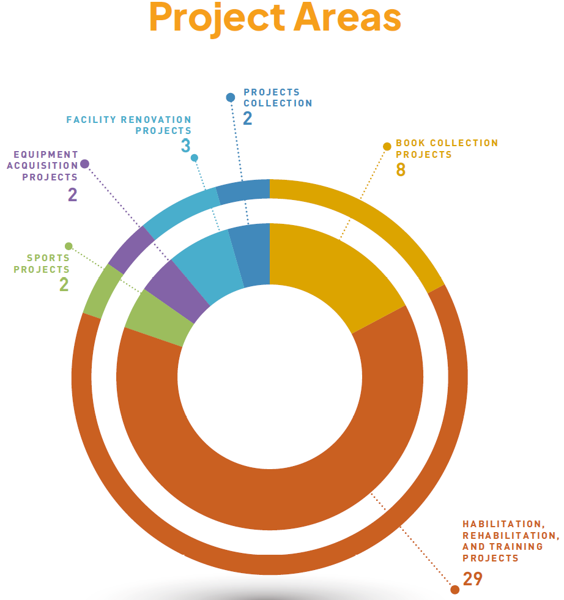
Page 48
FIGURE 2
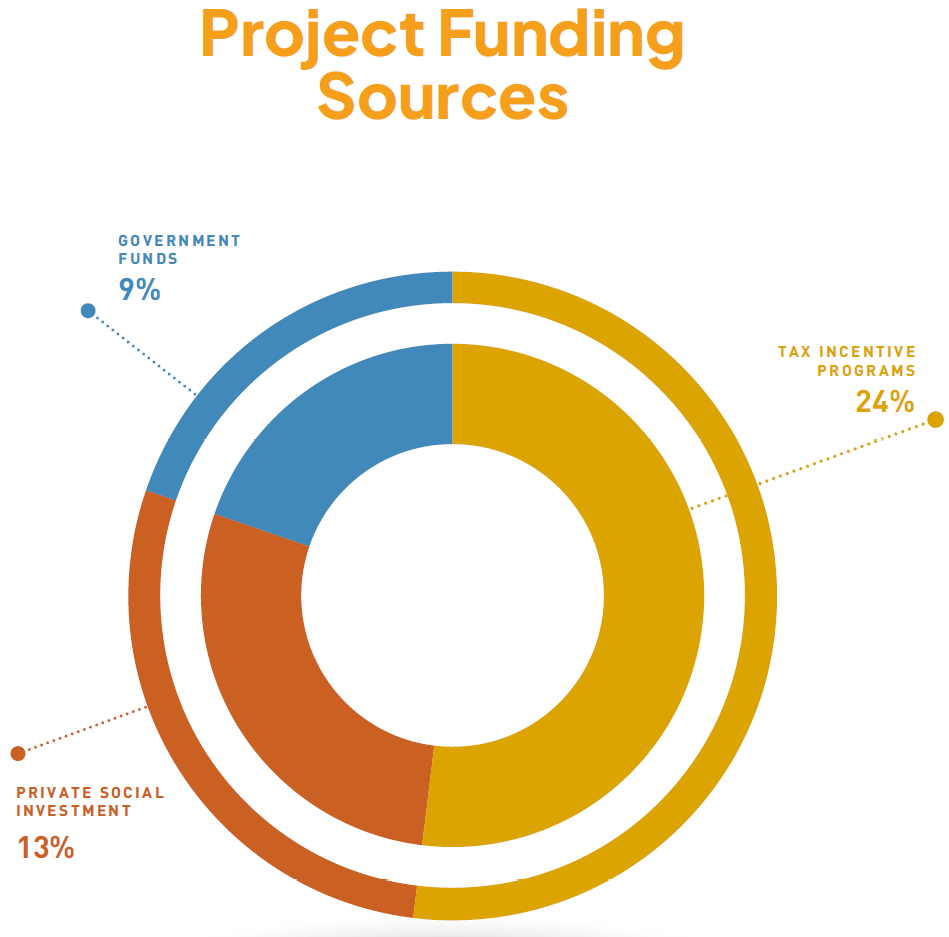
Page 49
SDGs

SDG 13. Take urgent action to combat climate change and its impacts.*
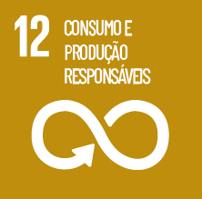
SDG 12. Ensure sustainable consumption and production patterns.
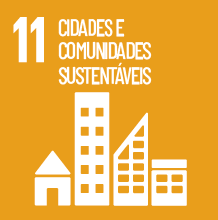
SDG 11. Make cities and human settlements inclusive, safe, resilient and sustainable.
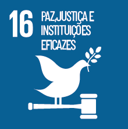
SDG 16. Promote peaceful and inclusive societies for sustainable development, provide access to justice for all and build effective, accountable and inclusive institutions at all levels.
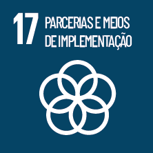
SDG 17. Strengthen the means of implementation and revitalize the Global Partnership for Sustainable Development.
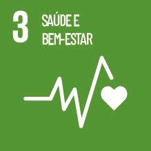
SDG 3. Ensure healthy lives and promote well-being for all at all ages.

SDG 10. Reduce inequality within and among countries.
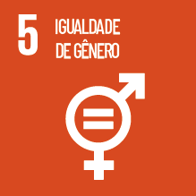
SDG 5. Achieve gender equality and empower all women and girls.
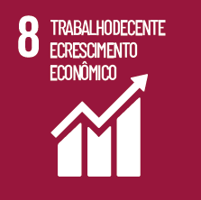
SDG 8. Promote sustained, inclusive and sustainable economic growth, full and productive employment and decent work for all.
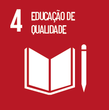
SDG 4. Ensure inclusive and equitable quality education and promote lifelong learning opportunities for all.
Page 50
Information Technology, Development, and Innovation
In 2025, Fundação Dorina’s Information Technology area achieved significant milestones in the development of proprietary digital platforms and tools, strengthening its innovation capabilities and expanding the institution’s technological ecosystem. A key highlight was the continued evolution of the Braille Platform, an in-house system developed for the transcription and production of Braille books. During the year, it evolved into a comprehensive production ecosystem, reaffirming the Foundation’s commitment to accessibility through technology. At the same time, Dorina AI, an artificial intelligence solution trained on the Foundation’s institutional expertise, reached the final stage of development, with deployment scheduled for 2026. Throughout the year, the team also developed internal software solutions designed to increase productivity and optimize workflows, fostering greater integration across departments and improving operational efficiency. These innovations proved particularly important during the Foundation’s headquarters renovation, when the IT team ensured uninterrupted operations and continuous support for all staff.
![Image: Photograph. A gray laptop is open on a white surface, with the screen facing forward, displaying a web page with a white top bar and menu items: Home, Docx, Revisions, and Saved Descriptions; on the right, a language selector labeled Portuguese and a gear icon. Below, on the left, the logo of the Dorina Nowill Foundation for the Blind. On the right, there is a text box with typed content followed by two buttons: Describe Again and Cancel. In the lower left corner of the screen, the text: copyright 2026. Created with love by the Dorina Nowill Foundation for the Blind. End of image.](../resources/images/image_Image24493.png)
SUBTITLE: Photo: Dorina AI, Fundação Dorina’s artificial intelligence technology. END OF SUBTITLE.
Page 51
Advocacy
In 2025, the Advocacy area actively participated in councils, forums, commissions, and institutional coordination bodies dedicated to defending rights, strengthening public policies, and advancing accessibility and social inclusion, with a particular focus on social assistance and the rights of people with disabilities. Its work centered on monitoring legislation and regulatory developments, participating in decision-making processes, and providing technical expertise to a range of social oversight bodies and public policy development initiatives.
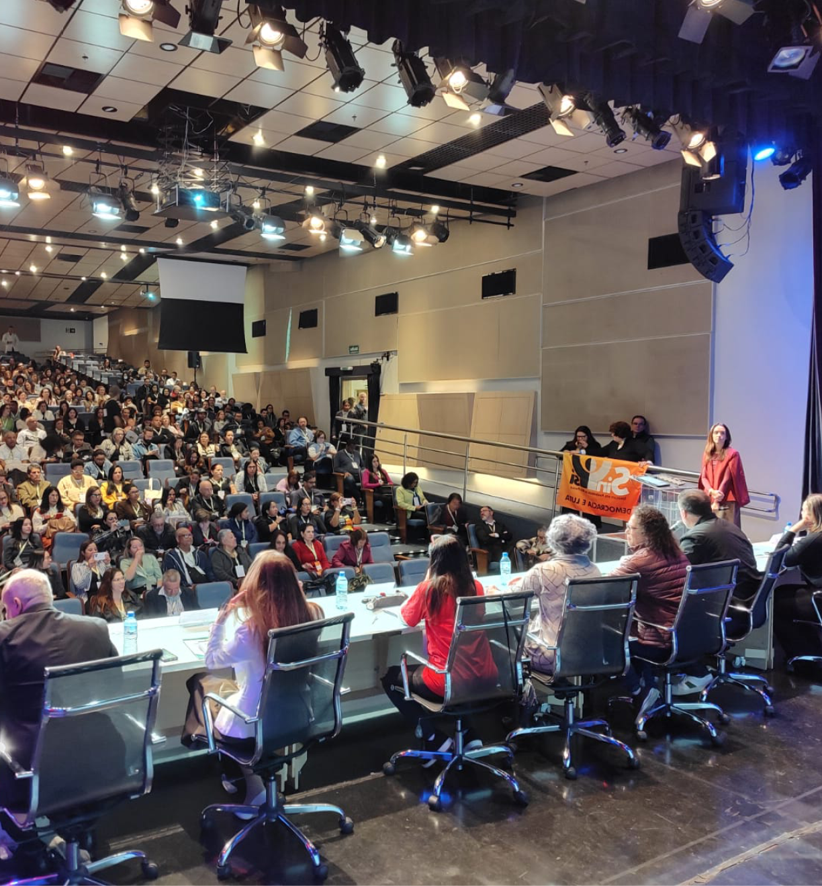
SUBTITLE: Photo: State Conference. END OF SUBTITLE.
Page 52
São Paulo Municipal Council for Social Assistance (COMAS/SP)
Through its Advocacy area, Fundação Dorina represented the social assistance sector on the São Paulo Municipal Council for Social Assistance (COMAS/SP), working to protect and advance social assistance rights, particularly those of people with visual impairments. Throughout the year, the Foundation’s participation contributed to strengthening the Council’s transparency, governance, and administrative processes, generating tangible benefits for civil society organizations.
In 2025, implementation continued under COMAS Resolution No. 2118/2023, which regulates the registration and renewal processes for social assistance organizations. In response to a backlog of applications from previous years, a dedicated task force was established to review and regularize pending cases. As a result, approximately 536 registration and renewal applications were assessed, accelerating procedures while introducing clearer and less bureaucratic processes.
The Advocacy team also contributed to the development of the COMAS Practical Guide for the Registration and Renewal of Organizations, created to enhance transparency and facilitate access to the information organizations need to maintain compliance with the Council’s requirements.
Another major achievement was participation in drafting and approving the COMAS Code of Ethics, an initiative designed to strengthen governance, integrity, and institutional accountability.
Throughout the year, the Foundation also served on the Conference Organizing Committee, responsible for coordinating the 32 Regional Social Assistance Conferences and the 16th Municipal Social Assistance Conference, which brought together approximately 9,000 participants. This work included technical meetings, contract oversight, coordination with the Municipal Secretariat for Social Assistance, collaboration with regional supervisory offices, and on-site support during the conferences.
In the area of public policy financing, the Council approved a record volume of funding through parliamentary amendments, allocating more than BRL 18 million to social assistance organizations across the municipality. It also approved a resolution presenting, for the first time, a detailed breakdown of the 2026 social assistance budget, estimated at BRL 5.2 billion. Additionally, COMAS reviewed and approved the 2024 financial and programmatic accountability report submitted by the Municipal Secretariat for Social Assistance, reinforcing the Council’s statutory oversight responsibilities and promoting greater transparency in public administration.
Page 53
State Fund for the Protection of Diffuse Interests (FID)
As part of the State Fund for the Protection of Diffuse Interests (FID), administered by the São Paulo State Secretariat of Justice and Citizenship, Fundação Dorina participated in monitoring projects financed through the Fund, including institutional events and meetings related to the approval and execution of grant agreements with municipalities across the State of São Paulo.
Among the year’s key achievements were the completion of an accessibility project in Paranapiacaba and the signing of grant agreements with municipal governments, totaling approximately BRL 290 million for public infrastructure projects. All approved projects were required to incorporate accessibility requirements, reinforcing the Fund’s commitment to inclusive public spaces.
São Paulo Municipal Council for the Rights of Children and Adolescents (CMDCA/SP)
Within the São Paulo Municipal Council for the Rights of Children and Adolescents (CMDCA/SP), Fundação Dorina’s Advocacy area focused primarily on issues related to funding, organizational registration, and the protection of children’s and adolescents’ rights. In 2025, the Council launched a thematic funding call for projects addressing school dropout, using resources that had previously been reserved within the municipal fund’s contingency allocation.
The Advocacy team also contributed to the development of the 2025 FUMCAD Funding Call, providing recommendations to strengthen the protection of the rights of children and adolescents with disabilities. In addition, the team participated in the Registration Committee, monitoring registration processes and advocating for the interests of the organizations it represented.
Permanent Accessibility Commission (CPA)
As a member of the Permanent Accessibility Commission (CPA), coordinated by the Municipal Secretariat for Persons with Disabilities, Fundação Dorina contributed to discussions on technical solutions and public policies aimed at improving urban accessibility.
In 2025, the Commission explored technological alternatives for audible pedestrian signals used by visually impaired people, seeking to balance users’ accessibility needs with concerns raised by residents in the surrounding neighborhoods where the devices are installed.
The Commission also conducted technical accessibility assessments at cultural and public venues, including Parque da Água Branca, the Biennial Pavilion, and Ibirapuera Park, and participated in the accessibility certification process that recognized the São Paulo Municipal Theatre. In addition, the Commission contributed to discussions on accessible transportation and evaluated projects and websites for the awarding of Accessibility Certification Seals.
Page 54
Brazilian Bar Association – São Paulo Section (OAB/SP)
Fundação Dorina’s Advocacy area participated in the activities of the Third Sector Rights Committee and the Rights of Persons with Disabilities Committee of the Brazilian Bar Association – São Paulo Section (OAB/SP), contributing to discussions on legislation, public policy, and the protection of rights.
Among the year’s key activities were participation in a national third sector conference, contributions to a public hearing on proposed legislation related to the Brazilian Inclusion Law, and collaboration on initiatives to improve accessibility at events and in institutional communications.
The team also took part in a public consultation organized by the National Council of Justice (CNJ) regarding the biopsychosocial assessment instrument used in proceedings related to the Continuous Cash Benefit (BPC).
Collaboration with Public Agencies and Representative Forums
Throughout the year, Fundação Dorina’s Advocacy area maintained an ongoing dialogue with public agencies, representative forums, and civil society movements. This included meetings with the Vila Mariana Subprefecture to advance the installation of tactile paving in the area surrounding the Foundation, as well as active participation in forums and representative groups focused on social assistance, accessibility, and the third sector. These collaborative efforts supported the monitoring of public policies, strengthened social participation, and advanced the protection of the rights of people with disabilities and civil society organizations.
Page 55

Paranapiacaba: Advancing Accessibility in a Historic Landmark of São Paulo
In 2025, as part of its participation in the State Fund for the Protection of Diffuse Interests (FID), Fundação Dorina’s Advocacy area took part in the inauguration of the renovation of the Pedra Lisa Trail, located in the historic village of Paranapiacaba, in the municipality of Santo André.
Renowned for its close connection to the historic São Paulo Railway, Paranapiacaba preserves buildings and landscapes dating back to the expansion of the railway network in the State of São Paulo. Today, it is recognized as an important site of historical, cultural, and environmental heritage. The project was officially inaugurated at Cine Lyra, regarded as the first movie theater in the State of São Paulo, originally built to serve the workers of the British-owned railway who lived in the region.
Funded through the FID, the project combined infrastructure improvements with accessibility enhancements, expanding access to the site while reinforcing the principle that heritage preservation initiatives should also promote accessibility and ensure everyone’s right to experience cultural and natural heritage.
Fundação Dorina’s involvement in this initiative underscores its commitment to advancing public policies that recognize inclusion as an essential component of sustainable development, helping make historic and tourist destinations increasingly accessible to all.
Page 56
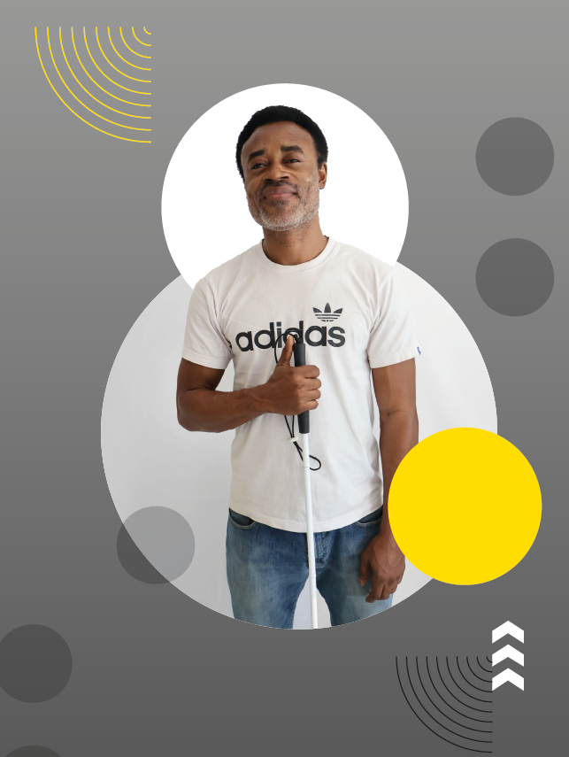
SUBTITLE: Photo: Marcelo Kawika, served by Fundação Dorina. END OF SUBTITLE.
Page 57
5. Financial Indicators
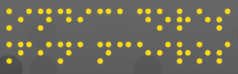
Page 58
FIGURE 1
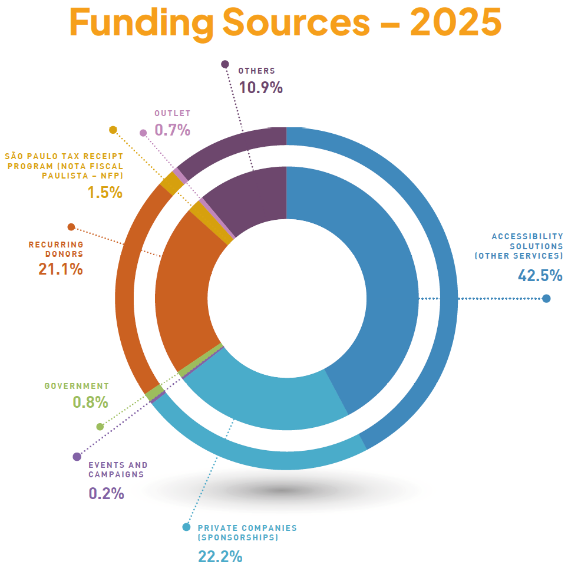
Page 59
FIGURE 2
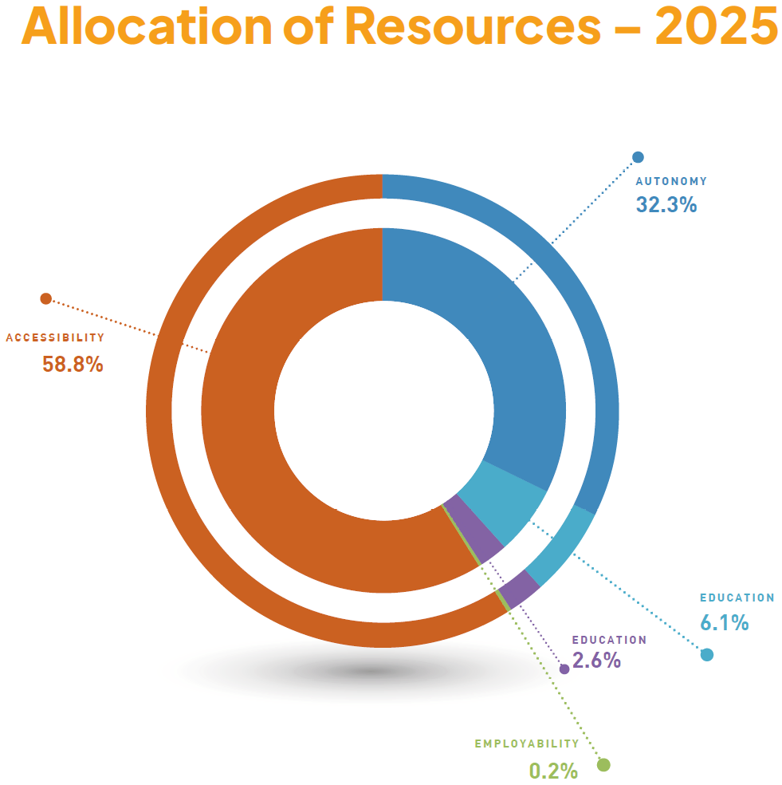
Page 60
Financial Statements
As of December 31, 2025 and 2024
With the Independent Auditors’ Report
Table: equivalent text below.
(Amounts expressed in Brazilian reais) | |||
Statement of Financial Position as of December 31, 2025 and 2024 | |||
Note | 2025 | 2024 | |
Current Assets | |||
Cash and cash equivalents – Unrestricted funds | 5(a) | 15,488,561 | 21,578,755 |
Cash and cash equivalents – Restricted funds | 5(b) | 4,758,494 | 4,112,750 |
Trade receivables | 6 | 406,538 | 809,459 |
Inventories | 7 | 1,661,842 | 143,374 |
Prepaid expenses | 8 | 25,791 | 20,424 |
Other receivables | 9 | 239,754 | 1,126,556 |
- | 22,580,980 | 27,791,318 | |
Non-Current Assets | |||
Marketable securities | 10 | 172,061,365 | 148,902,663 |
Judicial deposits | 13 | 35,945 | 32,465 |
- | 172,097,310 | 148,935,128 | |
Property, Plant and Equipment and Intangible Assets | |||
Property, plant and equipment | 11 | 18,742,427 | 6,563,636 |
Intangible assets | 12 | 1,080,797 | 949,708 |
Assets held under loan agreement | - | 29,120 | 29,120 |
- | 19,852,344 | 7,542,464 | |
Total Assets | - | 214,530,634 | 184,268,910 |
The notes to the financial statements form an integral part of the financial statements and are available on Fundação Dorina’s website, together with the complete financial statements and the Independent Auditors’ Report.
Page 61
Table: equivalent text below.
Statement of Financial Position as of December 31, 2025 and 2024 | |||
Note | 2025 | 2024 | |
Current Liabilities | |||
Trade payables | 13 | 778,922 | 413,165 |
Salaries and social charges | - | 444,761 | 421,970 |
Accrued vacation pay and related charges | 4(h) | 735,062 | 760,922 |
Government grants, subsidies, and tax incentive funds to be recognized | 17 | 4,758,494 | 4,112,682 |
Deferred revenue – Foundation-funded projects | 18 | 2,502,531 | 1,071,076 |
- | 9,219,770 | 6,779,815 | |
Non-Current Liabilities | |||
Provision for legal claims | 14 | 1,246,181 | 1,246,181 |
Assets held under loan agreement | - | 29,120 | 29,120 |
- | 1,275,301 | 1,275,301 | |
Net Assets | |||
Net Assets | 15 | 176,213,794 | 170,034,052 |
Surplus / (Deficit) for the year | 16 | 27,821,769 | 6,179,742 |
- | 204,035,563 | 176,213,794 | |
Total Liabilities and Net Assets | - | 214,530,634 | 184,268,910 |
The notes to the financial statements form an integral part of the financial statements and are available on Fundação Dorina’s website, together with the complete financial statements and the Independent Auditors’ Report
Page 62
Table: equivalent text below.
Statements of Activities for the Years Ended December 31, 2025 and 2024 | |||
Operating Revenues | Note | 2025 | 2024 |
With donor restrictions | |||
Rouanet Law, PROAC, and government grant agreements | 17 | 4,298,732 | 3,991,762 |
Sponsored projects | 18 | 1,782,697 | 911,525 |
- | 6,081,429 | 4,903,287 | |
Without donor restrictions | |||
Donations and fundraising campaigns | 19 | 6,641,449 | 5,287,443 |
Sales of goods and services | 21 | 5,122,303 | 6,411,200 |
Other operating income | 20 | 37,419 | 915,134 |
- | 11,801,171 | 12,613,777 | |
In-kind contributions | |||
Volunteer services | 23 | 741,136 | 505,303 |
In-kind contributions received | 24 | 2,476,508 | 3,181,547 |
- | 3,217,644 | 3,686,850 | |
Total Operating Revenues | - | 21,100,244 | 21,203,914 |
Operating Expenses | |||
with donor restrictions | |||
Execution of government grant agreements | 17 | (4,298,732) | (3,991,762) |
Expenses for sponsored projects | 18 | (1,782,697) | (911,525) |
Matching contribution for LEGO® Braille Bricks (LBB) projects | - | (366,541) | - |
- | (6,447,970) | (4,903,287) | |
without donor restrictions | |||
Personnel, payroll taxes, and employee benefits | 27a | (8,525,594) | (7,518,665) |
Administrative expenses | 27b | (6,413,276) | (5,435,420) |
Institutional projects | - | (2,358,813) | (249,008) |
In-kind contribution – use of property | 26 | (67,329) | (296,092) |
Depreciation and amortization | 11 e 12 | (1,345,029) | (1,167,079) |
- | (18,710,041) | (14,666,264) | |
Page 63
Table: equivalent text below.
Statements of Activities for the Years Ended December 31, 2025 and 2024 | |||
Operating Expenses | Note | 2025 | 2024 |
With donor restrictions | |||
Donated services | |||
Volunteer services | 23 | (741,136) | (505,303) |
Offsetting entry for in-kind contributions received | 24 | (2,476,508) | (3,181,547) |
Total donated services | - | (3,217,644) | (3,686,850) |
Total Operating Expenses | - | (28,375,655) | (23,256,401) |
Operating Surplus (Deficit) | - | (7,275,411) | (2,052,487) |
Non-operating Revenues | |||
Other non-operating income | 20 | 5,306,032 | - |
Surplus (Deficit) before Financial | - | (1,969,379) | (2,052,487) |
Results | |||
Financial results | 28 | 29,791,148 | 8,232,229 |
Surplus for the Year | - | 27,821,769 | 6,179,742 |
Tax exemptions and tax waivers | 22 | 12,697,350 | 5,150,564 |
Employer social security contributions | - | (2,529,737) | (2,345,359) |
Payroll PIS contribution | - | (99,205) | (91,975) |
Individual Income Tax (IRPF) | - | (6,931,442) | (1,520,936) |
Social Contribution on Net Profit (CSLL) | - | (2,503,959) | (556,177) |
COFINS | - | (633,007) | (636,117) |
Surplus for the Year | - | 27,821,769 | 6,179,742 |
The notes to the financial statements form an integral part of the financial statements and are available on Fundação Dorina’s website, together with the complete financial statements and the Independent Auditors’ Report.
Page 64
Independent Auditor’s Report on the
Financial Statements
To the Members of the Board of Trustees of Fundação Dorina Nowill para Cegos - São Paulo, SP
Opinion
We have audited the financial statements of Fundação Dorina Nowill para Cegos (the “Foundation”), which comprise the statement of financial position as of December 31, 2025, and the related statements of activities, changes in net assets, and cash flows for the year then ended, as well as the accompanying notes to the financial statements, including a summary of significant accounting policies and other explanatory information. In our opinion, the accompanying financial statements present fairly, in all material respects, the financial position of Fundação Dorina Nowill para Cegos as of December 31, 2025, and the results of its operations and its cash flows for the year then ended, in accordance with accounting practices adopted in Brazil applicable to nonprofit entities (ITG 2002).
Basis for Opinion
We conducted our audit in accordance with Brazilian and International Standards on Auditing. Our responsibilities under those standards are further described in the Auditor’s Responsibilities for the Audit of the Financial Statements section of our report. We are independent of the Foundation in accordance with the relevant ethical requirements set forth in the Code of Professional Ethics for Accountants and the professional standards issued by the Federal Accounting Council (CFC), and we have fulfilled our other ethical responsibilities in accordance with these requirements. We believe that the audit evidence we have obtained is sufficient and appropriate to provide a basis for our opinion.
Page 65
Responsibilities of Management and Those Charged with Governance for the Financial Statements
Management is responsible for the preparation and fair presentation of the financial statements in accordance with accounting practices adopted in Brazil applicable to nonprofit entities (ITG 2002), and for such internal control as Management determines is necessary to enable the preparation of financial statements that are free from material misstatement, whether due to fraud or error.
In preparing the financial statements, Management is responsible for assessing the Foundation’s ability to continue as a going concern, disclosing, as applicable, matters related to going concern, and using the going concern basis of accounting unless Management either intends to liquidate the Foundation or to cease operations, or has no realistic alternative but to do so.
Those charged with governance are responsible for overseeing the Foundation’s financial reporting process.
Auditor’s Responsibilities for the Audit of the Financial Statements
Our objectives are to obtain reasonable assurance about whether the financial statements as a whole are free from material misstatement, whether due to fraud or error, and to issue an auditor’s report that includes our opinion. Reasonable assurance is a high level of assurance but is not a guarantee that an audit conducted in accordance with Brazilian and International Standards on Auditing will always detect a material misstatement when it exists. Misstatements may arise from fraud or error and are considered material if, individually or in the aggregate, they could reasonably be expected to influence the economic decisions of users taken on the basis of these financial statements.
As part of an audit conducted in accordance with Brazilian and International Standards on Auditing, we exercise professional judgment and maintain professional skepticism throughout the audit. We also:
• Identify and assess the risks of material misstatement of the financial statements, whether due to fraud or error; design and perform audit procedures responsive to those risks; and obtain audit evidence that is sufficient and appropriate to provide a basis for our opinion. The risk of not detecting a material misstatement resulting from fraud is higher than for one resulting from error, as fraud may involve collusion, forgery, intentional omissions, misrepresentations, or the override of internal controls.
Page 66
• Obtain an understanding of internal controls relevant to the audit in order to design audit procedures that are appropriate in the circumstances, but not for the purpose of expressing an opinion on the effectiveness of the Foundation’s internal controls.
• Evaluate the appropriateness of the accounting policies used and the reasonableness of accounting estimates and related disclosures made by Management.
• Conclude on the appropriateness of Management’s use of the going concern basis of accounting and, based on the audit evidence obtained, whether a material uncertainty exists related to events or conditions that may cast significant doubt on the Foundation’s ability to continue as a going concern. If we conclude that a material uncertainty exists, we are required to draw attention in our auditor’s report to the related disclosures in the financial statements or, if such disclosures are inadequate, to modify our opinion. Our conclusions are based on the audit evidence obtained up to the date of our auditor’s report. However, future events or conditions may cause the Foundation to cease to continue as a going concern.
Evaluate the overall presentation, structure, and content of the financial statements, including the disclosures, and whether the financial statements represent the underlying transactions and events in a manner that achieves fair presentation.
We communicate with those charged with governance regarding, among other matters, the planned scope and timing of the audit and significant audit findings, including any significant deficiencies in internal controls identified during our audit.
São Paulo, April 29, 2026
Irko Hirashima
Independent Auditors
CRC No. 2SP020649
Denison Santos Vieira
Certified Public Accountant
CRC No. 1SP319963/O-6
Page 67
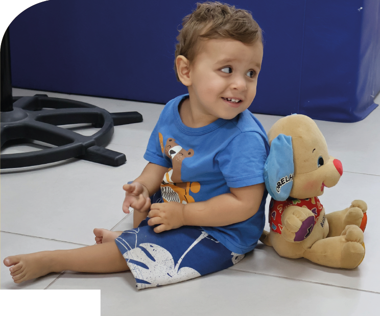
SUBTITLE: Photo: Bernardo Vilas Boas, served by Fundação Dorina. END OF SUBTITLE.
THE COMPLETE FINANCIAL STATEMENTS ARE AVAILABLE ON OUR WEBSITE:
http://fdnc.io/mo4
Page 68
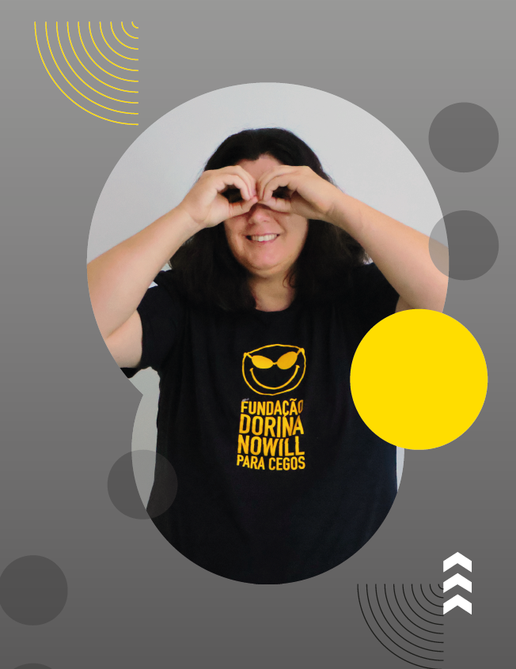
SUBTITLE: Photo: Silvana Grasmostine, served by Fundação Dorina. END OF SUBTITLE.
Page 69
6. Board and Management
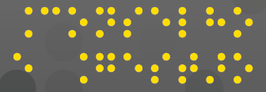
Page 70

Board Leadership
Board of Trustees
Eduardo de Oliveira
Chair
Roberto Faldini
First Vice Chair
Luiz Felipe Passos Fleury
Second Vice Chair
Anne Catherine Olesen
Third Vice Chair

Executive Management
Alexandre dos Santos Oliveira Munck
Chief Executive Officer
Carla De Maria
Accessibility Solutions Manager
Kátia Amaral
Executive Manager of Administration and Finance
Maria das Graças Martins de Oliveira
Executive Human Resources Manager
Rafael Martins Gonçalves
Information Technology, Development, and Innovation Manager | Data Protection Officer (DPO)
Taisa Pelucio
Fundraising and Marketing Manager
Advisory Board
Ana Maria Moraes Velloso
Celso Alves Feitosa
Cristiane Porto Rodrigues Da Cunha
Flávio Mendes Bitelman
Hiran Castello Branco
Marcelo Morgado Cintra
Maria Carolina Pinto Coelho Carvalho
Maria Lúcia Kerr Cavalcante De Queiroz
Supervisory Board
Ana Luiza Salles Lourenço Oliveira
Demetrio De Souza
Marcelo José Pires Barbosa (Chair)
Page 71
Board of Trustees
Adriana de Magalhães Gouvêa
Adriano Formosinho Correia
Alfredo Weiszflog
Andrea Fonseca França
Antonio Carlos Grandi
Bento Leandro Carneiro
Célia Cristina Monteiro de Barros Whitaker
Cristiano Humberto Nowill
Cristina Faria de Castro Brandão
Dulce Arena Avancini
Estela Maria Lemos M. Soares de Camargo
Flavio Bauer
Francisco Henrique Chimenti Della Manna
Geraldo Pinheiro da Fonseca Filho
Gustavo Victor de Paula Baptista
Henrique José Fernandes Luz
Irineu da Costa Cruz
João Batista Maia da Silva
Joaquim Romeu Espinheira Teixeira Ferraz
José Cláudio da Rocha e Silva
Karine Gonçalves Pansa
Leonardo Barém Leite
Luiz Casimiro de Queiroz
Luiz Henrique Prescendo
Marcio Manoel Nowill
Maria Cristina Godoy Cruz Felippe
Maria do Carmo Novaes Bueno Cury (Tuza Cury)
Martha Vicente de Azevedo Nowill
Moisés Bauer Luiz
Nair Passos Fleury (Ika Fleury)
Regina Carvalho Dias de Gouvêa
Reynaldo Rey Zani
Rodrigo Caldas de Toledo Aguiar
Silvia Saddi Cury
Victor de Oliveira Cosme
Credits
A collaborative effort by professionals in content development, design, proofreading, and project coordination.
Chief Executive Officer
Alexandre Munck
Fundraising and Communications & Marketing Management
Taisa Pelucio
Communications & Marketing Coordinator
Carolina Orilio
Content Development
Danielle Bambace - W5 Publicidade
Graphic Design
Beto Paixão - W5 Publicidade
Layout Design
Malu Paiva - W5 Publicidade
Support
Cláudia Piazza Costa
Rodrigo Torres
Photography
Acervo da Fundação Dorina
Cecília Furtado
Cléo Acevili
Fernando Pimentel
Rodrigo Torres
Art Direction
W5 Publicidade
***
EPUB
Produzido por Fundação Dorina Nowill para Cegos
Rua Doutor Diogo de Faria, 558 - Vila Clementino
CEP: 04037-001 - São Paulo - SP
Telefone: (11) 5087-0999
www.fundacaodorina.org.br
*
Linearização: Letícia Saracini Duarte
Descrição de imagens: Francielle Maria Chies
Diagramação: Bruno Alves Suniga
Revisão: Francielle Maria Chies
Supervisão: Marina Vargas O. Angelelli